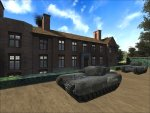

|
|
 |
| This page has all my ET map pk3 files available for
download. Please ensure you play the maps using these most recent
versions.
Thanks to -=Hawk=- for designing this web page.
If you would like to follow my mapping tutorial,
please click here.
|
|
|
Berlin
|
|
A Berlin street, 1945. Allies have to capture the street in house-to-house combat.
The first buildings to capture are marked by a red flare (which turns blue when Allies capture the flag and red on Axis recapture).
Flags (which are always on the ground floor) must be held by the Allies for a total of 90 seconds to make the capture permanent.
At that point the flare turns yellow, indicating that Allies must now eliminate all Axis defenders in the building to secure it. So long as at least one Axis defender remains alive in the building, it remains unsecured. When the flare turns yellow Axis have 20 seconds to re-occupy the building - after that time as soon as no Axis soldiers remain alive in the building it is secured.
When the first buildings are secured the yellow flares are extinguished and red flares are lit outside the next buildings to be captured. In this way Allies progress up the street, trying to secure a total of 7 buildings to win.
There are no dummy windows in the map, which means every window opening potentially conceals an enemy soldier: so advancing in the open street is a risky business. Allied cov ops will need to provide smoke cover and seek out enemy snipers to assist the advance of Allied troops.
The flares are an important element in the game, and
are produced using ET smoke generator entities.
Some players will have disabled smoke, perhaps to help
performance on low-spec machines or maybe to gain a
small visual advantage, and so will not be able to see
the flares.
To see flare smoke you need to set cg_wolfparticles
to 1 (on NQ you need cg_smokeparticles set to 1).
|
Version
1.2.0
March 2009
First public release
screen shots
|
|
Glider Panzer Duel
|
|
An open version of the Glider map with no objectives,
it's just a playground for team panzer deathmatch.
There is nothing to build and no obstructions.
The glider is pre-built and can be flown by anyone, and
shot down by any weapon. It auto-rebuilds when
destroyed.
The spawn locations change every minute, but you can
override the random choices by selecting any of the
spawns on the command map. All spawn locations are
available, some of which might be shared by the
enemy. Spawn times are every 12 seconds.
Ammo boxes supplying unlimited ammo are dotted around
the map, and recharge times are quicker than normal.
The map ends after 30 mins (arbitrarily
choosing Axis as the winners).
|
Version
1.0.1
December 2008
Silly festive release
Also alternative LowGrav version
|
|
Breakout 2
|
|
The sequel to the original Breakout map, Breakout 2 is
available now.
Picking up where the original Breakout
left off, the sequel has far better graphics and some
great new gameplay features.
Allies have to escort the battle-stained Tiger tank
along railway track through a station and its
surrounding village to escape.
In a departure from the usual tank barrier format,
each of the main barrier objectives is a sequential double
objective.
| Stage 1 |
Allies escort the tank along
the rail track towards the station. |
| |
Axis attempt to dynamite the railway footbridge
to prevent the tank reaching the station. |
| |
If successful, Allies have to dynamite the
wreckage to clear the path. |
| Stage 2 |
Allies get the tank to the
station. |
| |
Allies must build a ramp to get the tank off the
track. Nearby the Axis need to build a tank
barrier to prevent the tank entering the
village. Both teams will be attempting to
dynamite the enemy's construction. |
| Stage 3 |
Allies get through the village
and approach the road tunnel under the railway. |
| |
Axis attempt to dynamite the railway tunnel to
prevent the tank reaching the bunker. |
| |
If successful, Allies have to dynamite the
rubble to clear the path. |
| Stage 4 |
Allies enter the bunker and
need to leave via the exit at its far side. |
| |
Axis attempt to dynamite the control room over
the bunker exit to prevent the tank escaping. Note
that if the control room is destroyed, it also
destroys the Axis CP. |
| |
If successful, Allies have to dynamite the
debris to clear the path. This allows Axis to
repair their CP. |
| |
Allies win when they get the tank out of the
bunker. |
|
Version
1.4.0
February 2009
Axis barracks spawn given extra routes out, to
prevent spawners from being mown down by tank MG at
tunnel.
Axis barracks spawn and bunker spawn doors given
glass panels. |
| Troop Train
|
|
Axis are transporting armour reinforcements to the front line. Allies must
destroy the 2 tanks on the trains before they arrive at their destination.
All the action takes place on two moving trains adjacent on parallel tracks.
First objective is to blow up the crates that block the Allies path up the train.
This gives them access to the midtrain flag forward spawn, and sets them up for the final push to the front of the train where the Tiger tanks are being transported.
Players can move through the carriages, or along the top or sides, and can jump from one train to the other.
Passing overhead gantries and bridges help to prevent sniper domination, and quick respawn times mean players are never missing from the action for long. The straightforward layout also means it's quick to learn and no-one gets lost.
With a 10 minute map time limit, I believe it is best played in stopwatch mode.
Recommended 2-8 players per team, probably mayhem beyond that.
|
Version
1.2.0
May 25th, 2008
Click the image below to view the Troop Train gallery
|
|
Cluedo
|
|
Set in the country manor of the board game Cluedo (Clue in the
U.S.), there is no real scenario - this is played just
for laughs as a break between "proper" maps.
Each game lasts about 10 minutes.
Axis spawn in the Ballroom (centre top of the
map) and Allies in the Hall (centre bottom). A flag
then randomly spawns in one of the seven other
rooms. The upper edge of the room's walls glow
white when the flag is active inside. The flag can be
captured by either team, giving the white glow an inner
blue (allies) or red (axis) core to show the current
possessor. When the flag is held for a total
of 90 seconds by a team it is secured and removed from
the map. The white glow is removed and the inner
core remains to show that the room has been fought over
and which team secured it. This process is repeated
until one team has secured four flags and is victorious. Players
can move freely between the rooms and enter the
cellar. The doors are glass lined so that players
are aware of anyone camping the other side, which is
legitimate and likely to be the case. Each room can be
entered or exited through its windows, and the four
corner rooms have secret passages which link them.
Players can also move around and over the building. Each
of the seven flag rooms has a trap which is activated by
the lever in the corridor outside the room. Once a trap
is activated it cannot be re-used for 30 seconds. The
traps make the interior of the room uncomfortable or
downright dangerous for its occupants, which helps to
shift players camping the flag. The player activating a
trap is teleported to a location outside the room, so he
can witness the carnage he has caused. To make things
even more lively, the players will find there are all
sorts of places that engineers can plant mines to
surprise the unwary... The action is fast and frantic,
with low respawn times to ensure all the players stay in
the thick of it. Recommended for teams of between 2
and 12 per team.
|
Version
1.3.0
December, 2008
Extra bounce mats added.
Mines disabled (accidentally!), to be restored in
next release.
Click the image below to view the Cluedo gallery
|
| British
Bulldog |
|
The entire action centres on the race to deliver 6 gold crates into your team's vaults.
Engineers are not necessary: there are no dynamitable objectives and nothing to build.
This is a manic romp and not to be taken seriously :)
GOLD CRATES
Grab each of your 6 gold crates one at a time and deliver them to the vault. Allied crates from the East cages must go into the West vault, and vice-versa. Similarly for the Axis crates in the North cages to the South vault and vice-versa. Arrows shown in team colours (Allies=blue Axis=red) guide the way for the current objective.
FLAGS
There are four flag poles. They are NOT forward spawn points: instead they function like a Command Post. Each flag captured improves your team's Charge speed:
0 flags = no bonus
1 flag = small bonus
2 flags = better bonus, plus Cov Op landmine warnings are transmitted
3 flags = good bonus
4 flags = great bonus
STARS
Stars will drop to the ground from time to time. Grab them before they disappear to be granted power-ups and bonuses. Notable powerups are:
Expressway. This provides a launch pad from the spawn point to the opposite side of the map. Handy when the next objective is over there.
Sleigh pad. This provides a jump pad (located at the snowman) up to the flying sleigh. The pad operates only when the sleigh is overhead. When ridden, the sleigh will launch dual panzer strikes at the enemy base.
|
Version
1.6.0
4th December, 2007 |
|
Operation Chariot
|
|
In 1942 the greatest threat to allied shipping was the mighty German battleship, Tirpitz. Her vast
size meant that the only dock on the Atlantic seaboard that could accommodate her was at St
Nazaire.
So Operation Chariot was born, its mission to blow up the dock and neutralize the threat of the
Tirpitz.
The game commences with the allies having rammed the south gate with the destroyer HMS
Campbeltown. They must now attempt to destroy as many of the 6 main dockyard facilities as
possible.
There are 6 objectives to destroy, with victory being achieved to differing degrees at game end:
0-1 objectives destroyed DECISIVE Axis victory
2 objectives destroyed Major Axis victory
3 objectives destroyed Marginal Axis victory
4 objectives destroyed Marginal Allied victory
5 objectives destroyed MajorAllied victory
6 objectives destroyed DECISIVE Allied victory
The map is very open and the allies can attack the objectives in any order - however, for the sake
of gameplay, they don't have it all their own way.
The Allies must deliver a demolition charge, taken from the ship's hold, to any objective before
it can be dynamited and destroyed. Two demolition charges are initially available, and when the
first two objectives have been destroyed another two demolition charges are made available in the
ship's hold. When the fourth objective has been destroyed, the final two charges become available.
This allows the allies to choose their targets, but limits them to attacking up to two at a time.
In addition, the axis have two barracks for their spawning. One is near 3 objectives and the
second near the other 3 objectives. Axis players always spawn in the South Barracks, but have a
passage that links the two barracks instantaneously - that is, an axis player at the South
Barracks can move immediately (teleport) to the East Barracks and vice versa.
This is like having a choice of 2 spawn points, but without the bother of selecting them on the
command map.
To guide axis players to the objectives under threat, there are ingame command maps in each
Barracks. Indicators on these maps show which objectives are under attack, and which ones are
especially in danger because demolition charges have been placed.
By checking this map on spawning, axis players can take themselves immediately to the action.
|
Version 1.2.0
25th October, 2007
Corrects the
mistake which made the carried obj icon visible through walls.
I quite liked the effect but it confused and
annoyed some players.
This is a joint project with Avoc, author of Nemo. Click the image below to view the gallery of
images taken during development
|
| RTCW Depot 2
|
|
RTCW Depot was one of my favourite RTCW maps which I
always hoped would turn up on ET. It never did, so
I have done a conversion to get this classic played
again. Based on the revised Depot 2, it has a few
changes from the RTCW version but remains essentially
the same. The enemy forces confront each other in a
rail depot. The Allies must destroy the Axis
Anti-Aircraft gun at the north end of the depot before
the Axis destroy the Allied Field HQ in the south. Best
played with larger team sizes of say at least 8 per
team, to allow some players to attack the enemy
objective while some defend their own.
|
Version 1.0.2
September 28th, 2007
Some players found v1.0.1 too dark. Version
1.0.2 has had the ambient light increased.
Version 1.0.1
September 6th, 2007
Click the image below to view the
gallery
|
|
Battery
Recharged
|
|
I'm a big fan of Seawall Battery, and like many
players always wished you could get up onto the gun. So
I thought I would do a conversion of this classic map
that would open up that area for some great firefights. The
original map has a bit of a bottleneck at the ramp,
which lead to the development of a scriptfix to allow
the backdoor to be dynamited. In this version there
are two frontal routes for the allied assault, so
the blowable-backdoor script isn't needed. Changes from Seawall Battery
-
Three additional primary objectives created for allies, making four in total:
destroy radar station (next to bunker)
destroy gun platform
destroy gun controls (same as in original map)
destroy power supply (at bottom of indoor railway slope)
-
Assault ramp moved to the slope under the gun barrel, and time taken to build increased by 50%.
-
Original location of assault ramp smoothed to allow allies to get up slope on foot.
-
Axis can build barricade (satchel objective) to block the new slope.
-
Players can now reach gun and gun platform from ramp and from inside gun room.
-
New Axis-only door added at beach top leading directly to gun room, to allow Axis to better defend the slope and the gun.
-
New constructible (satchel objective) Axis-and-disguised-cov-op-only door added near "power supply room", to slow allied access to it via gun room assault.
-
Allied East Spawn moved closer to the lighthouse.
-
Axis spawn time reduced to 20 secs.
-
More areas now permit landmines.
|
Version
1.3.0
August 31st, 2007
|
|
Radar Summer
|
|
I've always liked Wurzburg Radar, I just wished it
would stop raining. So I have done a conversion of
this classic ET map to make it sunny with unlimited
views to the horizon. To make it more interesting
than just having nicer weather, I included these
changes:
- Extra Axis spawn location in the Road Hut - this
helps them fight back more quickly when Allies take
the Bunker. They will automatically spawn
there if the Allies capture the bunker, unless
the side door has been blown.
- 2 extra Allied primary objectives - destroy the
North and South Radar Stations.
- A lot of the player clipping has been removed,
allowing players to get onto high places previously
not possible.
- The tank in the garage can now be repaired by
Axis, and driven up the road to a defensive
position.
- New terrain textures, and things like owl hoots
replaced with bird song.
- Axis respawn time reduced.
- Generator added behind door under wooden
bridge. When blown by covops it opens the door
in the bunker and the door being the main entrance
to give additional passageways.
|
Version
1.3.0
June 25th, 2008
All 4 objs now required.
Blowable generator added, which opens bunker doors
when blown.
Click the image below to view the Radar Summer gallery
|
|
Glider
|
|
Spring 1943, the Austrian Alps: Allied Intelligence has reported that the enemy are developing a powerful new tank in a secure research facility. It is vital that one of the prototype Jagdpanther models be photographed for assessment.
Some Allied 'Horsa' gliders are in enemy hands and are crated in a nearby Axis outpost: capture the outpost and use the gliders to assist in the operation.
The Allies are dropped in by parachute and must assault the Outpost in order to gain access to the gliders crated there. They must then fly at least one glider from the Outpost to a hilltop overlooking the research facility. From there they will be able to destroy the generator, which opens the sealed door of the tank storage building.
They must steal the tank and transport it to the Outpost, where a Photo Reconnaissance Spitfire will be able to take photographs of it.
|
Version
3.0.2
May, 2007
Major changes to spawning, including when the
allies take the outpost, the axis paratroopers can try
to get it back; new axis spawn at centre of map; new
allied spawn in tank garage; and when the tank reaches
the guardpost the allied spawn is set there.
The parachute spawns are removed once the allied CP
is built.
The 2nd tank barrier has been moved to be closer to
the outpost.
Axis CP moved to the outpost.
Axis compound spawn enlarged to give more shoulder
room.
Ladder added to allow access to the top of the
garage.
|
|
Chartwell
|
|
Chartwell, England, 1943.
Axis have launched a surprise paratroop attack on
Chartwell, the home of WInston Churchill, to steal the
plans for the D-Day invasion.
This is a small map of 20 mins duration, centred on
the Axis attempts to enter the house and obtain the
plans, best for 6-16 players per team.
Gameplay
Axis initially spawn at a building nearby, but they
can quickly enable their paratroopers to attack by
damaging the AA gun or the AA gun controls. With
either of these out of action, the Axis spawn location
is randomly changed to any location on the map for each
Axis respawn. This allows the Axis team to attack
from potentially any direction.
Allies need to repair both in order to force the Axis
back to the original spawn.
The main Allied spawn is in the basement. There
is an Allied-only flag in the pavilion, which if
captured gives the Allies the option of spawning outside
the house.
To get into the house, Axis must either dynamite the
main entrance (non-repairable) or satchel either of the
stairwell doors (repairable).
The Key must be taken from the ground floor dining
room to the safe in the top floor study. To get
into the study either of its doors must have been
destroyed (one by dyna, one by satchel, both
non-repairable).
On delivering the Key to the safe, the safe door
opens and the Plans can be stolen. They must be
taken to the Command Post in the grounds, and the
Command Post built to secure an Axis victory.
Although all of the windows visible in picture 3 can
be broken, getting out of the house with the Plans is a
little trickier than it seems, as the broken windows are
too narrow to jump through.
In this map Axis Cov Ops can set booby traps at the
AA gun and AA gun controls in an effort to safeguard the
paratroop attack from interruption. The booby
traps are detonated if an unwary allied soldier touches
the faint translucent white bar that reveals their
presence. Allied Cov Ops can defuse the booby
traps.
|
Version
1.4.0
February, 2009
Fixed map exploit which allowed docs to be taken
from closed safe..

|
| TankBuster |
|
Spring 1944, Italy. The Allies are finally advancing at the Gustav Line when an S.O.E. Intelligence report reveals a hidden reserve of Axis armour near Monte Cassino.
The Allies must breach the depot heavy defences and destroy all the tanks stockpiled there before they can be used in an Axis counter offensive.
Description The Allies must escort a truck laden with a massive bomb to the re-inforced main gate of the Axis tank depot. The bomb is detonated when the Allied Command Post is built.
Once access has been obtained to the interior of the depot, the Allies must assault the tank garage and destroy the 8 jagdpanther tanks inside. Tanks destroyed cannot be repaired.
|
Version
2.0.0
9th May, 2007
Extra route to the station, wider tunnels, mines
now permitted in tunnels, timelimit reduced to 25 mins
|
| Tiger! |
|
Axis infantry must support their Tiger tank as it tries
to destroy an allied truck convoy.
Allied infantry must assist the convoy in escaping
through the town.
This map features a Tiger tank which does not need
player escort - it independently hunts the allied
trucks.
Allies send false radio signals and damage the axis
communication system in an effort to lead the Tiger away
from its prey.
Axis can take fuel cans to dips in the road on the
convoy route, to create firewalls that hold up the truck
movement - giving the Tiger the opportunity to catch and
destroy the trucks.
|
Version
1.1.0
16th August, 2006
|
| 110 Factory |
|
Allied raiders must get ashore from their stolen U-boat, storm the Me 110 factory and grab the secret radar components being fitted to aircraft on the production line.
The Allies start inside the U-boat and must assault the forward bunker using high-speed dinghies and weather balloons. Destroying the main entrance to the airstrip will give the Allies access to the Me110 factory and the radar components within.
Allies can enter the factory via the north doors or the side entrance and will need to fight their way along the production line to the south end where the radar components are kept.
The radar components must be brought to the
American halftrack outside the factory for an allied victory.
|
Version
2.0.0
10th June, 2007
Extra cover, indoors and outdoors.
High level gantries inside the factory give another
route to the radar parts.
Removed balloon rockets, and tidied some textures.
Damaged Me110 engines cause more harm when they
explode.
|
| 2tanks |
|
Both teams have the same objective:
-
Get your tank to the Fuel Dump before the enemy gets his there!
If the time limit expires the winning team is the one which has made the most
progress with their tank.
|
Version
1.7.1
12th October, 2005
Fuel is no longer needed
|
| 6flags |
For either team to win:
- Capture both base flags and hold them for 2 minutes,
or...
- Control all 6 flags
If the time limit expires the winning team is the one which controls the most flags.
|
Version
1.1.0
7th July, 2005
|
| Ludendorff Bridge |
|
1945, the famous bridge at Remagen over the Rhine.
The Axis commander has been given orders to blow
the bridge - but not too soon (to allow retreating
soldiers to escape) and not too late (to prevent
pursuing allies crossing the Rhine).
This map has several unusual features
|
Version
1.1.0
24th January, 2006Extra barricades provided at the
towers to prevent enemy soldiers from flooding into
the spawn and spawnkilling
|
| Breakout |
|
1944, France, soon after D-Day. A company of Allied soldiers are trapped by superior Axis forces near a french village. They must salvage a tank from the depot, force their way through the village and escape along the railway track.
This is a compact map, with the action focussed around the railway bridge, but the environment is very open allowing plenty of choice and scope for tactics. All the buildings can be entered.
|
Version
3.7.1
18th June, 2007
Additional route from allied spawn to the tank
garage - helps if Axis have infiltrated and are
camping the tank in the garage.
Allied spawn front window made bulletproof and
ladder into spawn removed - Axis unable now to enter
allied spawn.
Assault ramp given additional ladder, quickens
access to the bridge.
Ammo / Health cabinets removed from Allied Hut
spawn - no reason now for Axis to enter hut.
Ammo / Health cabinets moved from Axis bank to
adjacent terraced house - more accessible to both
teams.
Additional windows added to Axis bank.
Additional opening added to Church tower.
Halftrack moved forward a little, giving more
cover.
Additional cover provided on bridge and at forward
Allied window, which has had an MG42 added.
Some texture tidying and terrain tweaking.
Map time limit reduced by 1 minute to 24 minutes.
|
|
|
|